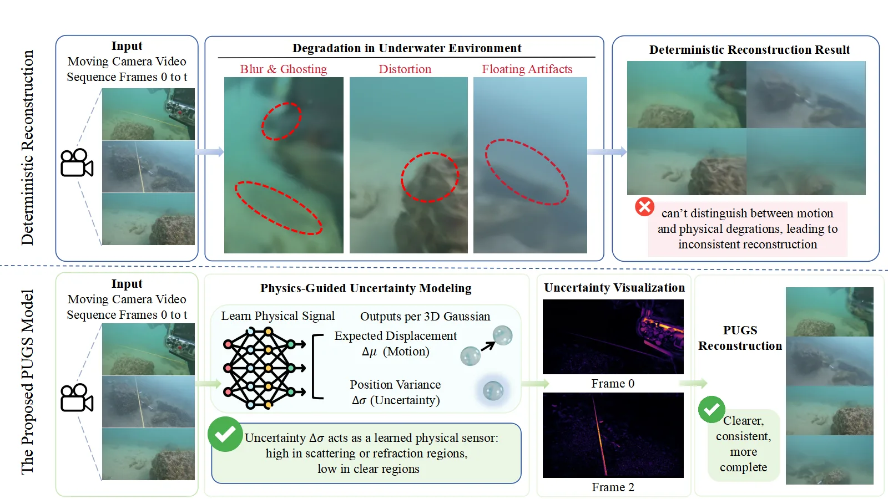
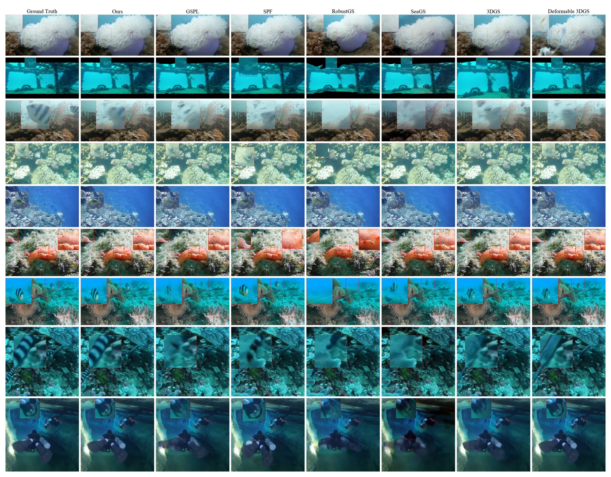

PUGS：把水下成像的物理不确定性变成动态 3DGS 的探索信号
PUGS: Physics-Guided Uncertainty Modeling for Underwater Dynamic 3D Gaussian Splatting
PUGS 把水下动态 3DGS 的形变场从“一个位移”改成“均值 + 位置方差”：位移按 Δμ + β(t)(Δσ⊙ε) 采样，Δσ 用 ℓ1 稀疏先验约束，β 从 1 退火到 0；训练时并行渲染确定性路径与随机路径，用 stop-gradient 蒸馏把确定性路径拉向随机路径的中心趋势，推理时关掉采样只走确定性路径。UVEB 11 场景平均 30.85 dB（比 Deformable-GS 高 1.16），DRUVA 4 场景 34.41 dB（比 UDF 高 3.99），Cave 41.01 dB（+3.74）、Boat 29.17 dB（+3.40）。代价是极浑浊场景出现 PSNR-LPIPS 反向：A11 PSNR 37.63 对 UDF 34.03，但 LPIPS 0.209 对 0.123。
作者、单位与技术谱系 · Research context
作者与单位
研究脉络
- Deformable-3DGS（Yang et al.）方法基座关系：用 canonical 高斯 + MLP 形变场表示动态场景，本文直接沿用这套表示与训练流程，只把确定性位移换成分布。[Deformable 3D Gaussians（arXiv 2309.13101）]
- RobustSplat 等不确定性动态 3DGS上游方法关系：把不确定性当作置信度或鲁棒权重来抑制瞬态干扰，本文改为把不确定性当作物理信号用于探索与致密化。[RobustSplat（arXiv 2506.02751）]
- PUGS（本篇）本篇推进关系：在形变场上增加位置方差、退火与双路自蒸馏，把“表示不确定性”推进到“用不确定性控制优化与容量”。[论文第 III 节与表 IV–V]
合作网络
- 中国海洋大学与中科院自动化所的共同署名中国海洋大学 计算机科学与技术学院 → 中科院自动化所 NLPR关系：共同署名（同一篇论文）[arXiv 官方 HTML 脚注]
- PUGS 项目页论文作者 → tingtingpius.github.io/PUGS关系：作者维护的项目页[项目页]
- 海大团队与水下视觉方向的延续Guoqiang Zhong（海大） → PUGS 的水下不确定性建模关系：团队研究方向延续（基于署名与主题的解读）[论文第 II-C 节与作者栏]
作者、单位与通讯作者来自论文首页脚注（事实）；脉络条目依据论文自身相关工作与引用（有来源的解读）；网络只记录同篇共同署名与作者维护的项目页，未推断导师/师生关系，也未把“同校”写成合作。
方法本质拆解 · What actually changed
是不是微调？
是从头训练，不是微调。高斯属性与形变网络（输出均值与方差）都在目标序列上优化，统一 40,000 次迭代，单张 RTX 3090 约 2 小时/场景；没有加载任何预训练几何或深度模型，也没有用外部深度、光流、2D 轨迹监督。
有没有额外约束？
新增三类约束：位置方差上的 ℓ1 稀疏损失（等价 Laplace 先验，防止方差膨胀成松弛变量）、随机退火因子 β(t) 从 1 到 0 的调度、蒸馏损失权重 λ_distill 的动态调度。坐标上沿用 canonical 空间与 COLMAP 固定位姿，没有引入尺度、重力或平面先验。
推理/后端到底做了什么？
推理只走确定性路径：β=0，采样项消失，用 Δμ 位移后的高斯做标准 3DGS 光栅化，没有额外优化、没有 BA、没有多帧后处理。也就是说训练期的随机性完全不在测试时出现，测试开销与普通动态 3DGS 同级（论文未给出具体数字）。
方法本质是什么？
本质是把“运动歧义”显式参数化成一个可优化的方差，再用退火与蒸馏把这个分布压回单点：方差大的地方允许更大范围搜索并分裂更多高斯，方差小的地方退化为确定性形变。它改变的是优化景观（让模型能跳出由光学干扰造成的局部极小）与容量分配，而不是网络结构或渲染后端。
输入单目视频与 COLMAP 位姿，改动位置在形变场的输出端（多一路位置方差）与致密化准则，通过重参数化采样、退火与 stop-gradient 蒸馏把随机探索收敛为确定性重建，直接效果是浑浊/海雪场景的浮点与鬼影减少。

结论与问题Conclusion & Motivation
核心结论
PUGS 的主张是：水下动态重建的瓶颈不是“几何估得不够准”，而是把光学干扰误当成结构运动。做法是把每个高斯的位移建模成分布（均值 Δμ + 位置方差 Δσ），训练时按方差采样探索、按退火逐步收紧，再用双路自蒸馏把确定性路径对齐到随机路径的中心趋势。效果上，UVEB 11 场景平均 30.85 dB（+1.16 对 Deformable-GS），DRUVA 4 场景 34.41 dB（+3.99 对 UDF），Cave 41.01 dB（+3.74）。更重要的是增益的分布：在 smoke、basin 这类真正存在观测歧义的场景增益最大（+1.60、+0.80），在 hanok、single flag 这类清晰确定性运动上持平甚至更差，说明 Δσ 捕捉的是观测不确定性而不是通用正则。
动机与问题
现有动态 3DGS（Deformable-3DGS、4D-GS 等）都用确定性形变场，隐含假设“每个像素变化都来自几何运动”。水下成像里，前向/后向散射、折射焦散与海雪会产生与真实运动无法区分的像素波动，优化器为了压低重建损失会把这些波动拟合成浮点和鬼影，形成典型的“几何渗漏”。已有不确定性方法（NeRF-W、FUGS、RobustSplat 等）把不确定性当标量置信度去加权损失，属于被动剔除；作者的关键观察是水下退化有物理结构——后向散射强度与悬浮粒子密度相关、焦散集中在与深度相关的空间频率、海雪有特征尺寸与速度分布——因此不确定性本身可以被当作可学习的物理信号，用来决定“在哪里多花表示能力”。
方法Method
方法总览
输入是单目视频，用 COLMAP 求位姿并初始化 canonical 高斯（位置、协方差、透明度、球谐颜色）。形变网络以 canonical 位置与时间嵌入为输入，输出均值位移 Δμ 与位置方差 Δσ；实际位移为 Δx = Δμ + β(t)·(Δσ⊙ε)，ε ~ N(0,I)，即局部重参数化。训练同时渲染两条路径：clean 路径只用 Δμ，uncertainty 路径用采样位移；重建损失加在 uncertainty 路径上，蒸馏损失 ||I_clean − sg(I_unc)||₁ 把 clean 拉向采样的视觉共识，梯度只从 clean 路径回传。Δσ 受 ℓ1 稀疏损失约束（等价于零均值 Laplace 先验的 MAP），β(t) 从 1 退火到 0，λ_distill 也做动态调度；位置方差超过阈值的高斯会被 split，把容量分配到高不确定区域。推理时 β=0，只用 clean 路径。
关键技术细节
三个设计细节决定方法能不能成立。第一是 stop-gradient 的方向：蒸馏只让梯度经过 clean 路径，若两条路径都回传，uncertainty 路径会被拉向 clean，探索收益消失。第二是稀疏先验的必要性：没有 ℓ1 约束时 Δσ 会膨胀成“万能松弛变量”，把误差都塞进方差里，作者用稀疏损失把它压回只在退化区域取大值。第三是致密化准则的改动：传统 split 只看空间尺度，这里把 Δσ 超过阈值也作为分裂条件，相当于让表示容量跟着观测不确定性走。实现上统一 40,000 次迭代、单张 RTX 3090、每场景约 2 小时，位姿固定不自优化。

实验Experiments
实验设置
三套数据共 22 个场景：UVEB 11 个（Boat、Snake、Fish、Shoal、Coral、Cave、Streak 等，覆盖细纹理、高速非刚体、铰接形变、遮挡与海雪）、DRUVA 4 个（A1、A2、A11、A12，高浑浊）、PhysGaia 7 个（hanok、single flag、pisa、bouncing balls、basin、tube、single smoke，用于验证非水下泛化）。指标为 PSNR、SSIM、LPIPS。对照在 UVEB 有 7 个（3D-GS、Sea-splat、3D-4DGS、Deformable-GS、Light-GS、PSF-4D、RobustGS），DRUVA 有 6 个（TiNeuVox、SeaThru-NeRF、4DGS、4DGaussian、WaterSplatting、UDF），PhysGaia 有 5 个（Deformable-GS、4DGS、STG、Mosca、SOM）；所有方法统一 40,000 次迭代并使用官方超参。
实验数字与比较
UVEB（表 I）：平均 30.85 dB，比 Deformable-GS 高 1.16 dB；Cave 41.01 dB（+3.74，LPIPS 0.009），Boat 29.17 dB（+3.40）；静态 3D-GS 在 Snake 上只有 21.09 dB，说明该场景对静态表示确实困难。DRUVA（表 II）：平均 34.41 dB，比 UDF 高 3.99 dB；但 A11 的 PSNR 37.63 对 UDF 34.03、LPIPS 0.209 对 0.123，A12 的 PSNR 35.35 对 31.01、LPIPS 0.233 对 0.100，即像素更准但感知更糊。PhysGaia（表 III）：平均 21.70 dB，仅比 Deformable-GS 高 0.60 dB；single smoke 28.10（+1.60）、basin 19.00（+0.80），而 hanok 16.10 对 Deformable-GS 16.30、single flag 18.60 对 STG 26.00，明确落后。
消融/失败边界
Snake 上的 8 组消融说明了组件分工：基线 30.09 dB / LPIPS 0.160；只加随机退火 30.45 / 0.102；加退火与稀疏损失 30.53 / 0.100；加退火与蒸馏 30.48 / 0.099；三者全开 30.62 / 0.098。由此可读出两件事：退火负责把 LPIPS 从 0.160 拉到 0.102（探索带来的感知收益最大），稀疏损失与蒸馏各再补 0.05–0.09 dB，且去掉退火的组合（30.34）损失最大。Boat 上同样单调：基线 28.10 → 全开 29.17（LPIPS 0.231 → 0.190）。失败边界很清楚：当场景是“清晰可见下的确定性运动”（hanok、single flag），随机探索没有可解决的歧义，反而引入方差噪声；当浑浊极端时，方差膨胀带来的模糊会让 LPIPS 反超。
局限与迁移Limitations & Transfer
局限与待核验
作者明确承认两条限制：极端浑浊下的 PSNR-LPIPS 权衡（A11/A12 背景变糊，归因于密集悬浮粒子区域的方差膨胀），以及退火策略是人工调度、不是数据驱动（未来工作方向）。我们另加几条待核验：Δσ 没有做校准评估（无 NLL/ECE 或与真实误差的相关性曲线），因此不能当作可用的协方差；论文没有报告推理时间、显存或 FPS，无法判断相对基线的部署代价；位姿完全依赖 COLMAP 且不联合优化，误差可能部分来自位姿而非表示；消融只覆盖 Snake 与 Boat 两个场景；正文 §IV-C 写“Table V, and V”，但 Snake 消融实际是表 IV，引用数字时要以表题为准；“平均 PSNR”是逐场景算术平均还是按像素加权未说明。
与你研究路线的关系
第一个可迁移模块是“方差即探索半径”：把每个点的位置不确定性作为优化步长/搜索范围的调节量，可以直接移植到因子图或 BA 的鲁棒核设计里，替代固定阈值的内点判定。第二个是双路 + stop-gradient 的训练形态：训练时随机、推理时确定，且用蒸馏保证两者一致，这个模式适合“离线随机优化、在线确定性求解”的状态估计流程。第三个是“不确定性驱动的容量分配”：在高不确定区域分裂高斯，等价于在地图维护里按可信度分配分辨率与更新频率。下一步实验建议：在一段含运动物体与传感器噪声的序列上，给动态高斯层加一路 Δσ，与固定半径抖动做 A/B，比较 PSNR/LPIPS 与轨迹漂移；同时记录 Δσ 与真实误差的相关性，先验证它是否真的是不确定度而不是自由度。

